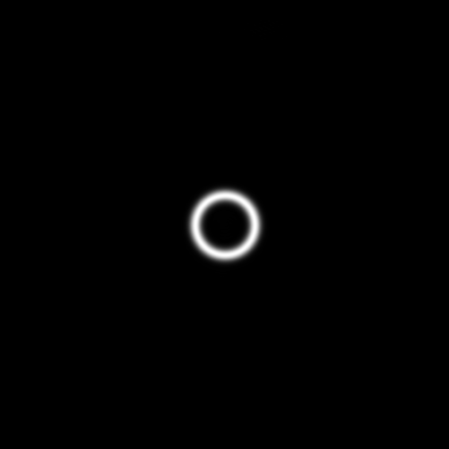

A · eiℓθ
Define the target
Combine a Gaussian ring amplitude with helical phase; set radius, width, and charge independently.
PARAMETRIC MODELI'm Shuyang. I turn physical problems into working models—and test them against the evidence.
A complete journey from a custom vortex field to phase-only encoding, numerical reconstruction, and complex-field validation.
How can a hologram that only controls phase reconstruct both a prescribed amplitude and a vortex phase?
My thesis applies an established bidirectional error diffusion algorithm (BERD) to custom annular vortex fields. Keeping the ring geometry fixed, I vary the topological charge and evaluate whether amplitude, phase, and topology survive reconstruction.
Numerical simulation · Thesis Tables 4.1–4.2 · Correlation coefficients are not percentage accuracy.
Select a topological charge to inspect the original simulation images and their measured metrics.

02Adapted existing propagation and encoding modules into a single-plane complex-field workflow, with evaluation built around vortex structure.
Combine a Gaussian ring amplitude with helical phase; set radius, width, and charge independently.
PARAMETRIC MODELZero-pad the field and use angular-spectrum propagation to obtain the ideal complex hologram.
ANGULAR SPECTRUMDiffuse complex error to unprocessed neighbors while alternating the scan direction between rows.
BIDIRECTIONAL ERROR DIFFUSIONReconstruct with Fresnel propagation; compare amplitude, phase, complex fields, and charge on a shared physical grid.
MULTI-METRIC EVALUATIONA convincing ring image is a starting point. The harder questions are whether comparisons are fair, metrics are valid, and errors are understood.
The Fresnel output has a different sampling interval from the input. Rebuilding the reference on the output grid prevents coordinate mismatch from becoming a false reconstruction error.
EVIDENCE: THESIS §3.4.2, §4.1 · MAIN SCRIPT §10.1Remove a global phase offset and fit amplitude and complex scaling by least squares, so evaluation measures field structure instead of overall propagation factors.
EVIDENCE: THESIS §3.5 · MAIN SCRIPT §10.4–10.4BThe BERD implementation records a reverse-scan correction: mirroring the 3/16 and 1/16 neighbor weights to keep error diffusion consistent with scan direction.
EVIDENCE: RETAINED EDITS IN bidir_EDHOP.m · NO ISOLATED ABLATION GAIN REPORTEDVary charge while fixing ring geometry. Evaluate complex-field correlation and phase winding around a closed path to expose phase errors even when ring amplitudes look similar.
EVIDENCE: THESIS TABLES 4.1–4.2 · SIX ARCHIVED CASESFrom ℓ=1 to ℓ=4, amplitude correlation stays nearly unchanged while complex-field correlation declines. That is why both matter.
Y: correlation, displayed range 0.88–1.00. X: target charge ℓ.
At ℓ=4, the topological order is correct, yet complex-field correlation is 0.909896 and phase RMSE is 0.284237 rad. Global winding and local field fidelity answer different questions.
Read the analysis ↗| ℓ | ρA | NRMSEA | RMSEφ / rad | ηc | εc | ηsupport | ℓrec |
|---|
ηsupport is the target-region energy fraction within the 501×501 evaluation window, not device diffraction efficiency. Recovered charge is shown as integer order; the raw ℓ=0 result is approximately 5.45×10⁻¹⁸.
This work evaluates established BERD encoding for a specific annular complex-field task. Results are numerical; physical SLM experiments and systematic comparisons against methods such as GS remain future work. The 8-bit hologram is an export artifact; reconstruction metrics use the unquantized phase array.
The project archive preserves prompts that translate physical constraints into coding tasks, with explicit propagation models, masks, and evaluation criteria.
My approach: make the problem precise, use AI to assist implementation and explanation, then check the equations, sampling grids, and outputs. Early MRAF exploration is documented separately from the final BERD thesis results.